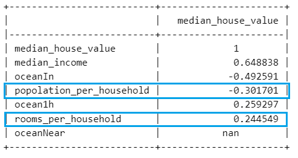
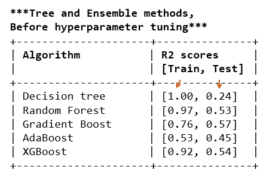

Housing Price Prediction
Context
Estimating a house price in an area is easy if you have the
a large data set of historical prices against a myriad of features (square footage, locality,
number of rooms, etc.).
Trouble is such data is not generally available to everybody.
But what is available publically is the census data...with only a limited set attribute, relating to the locality/district.
Problem Statement
Given the following set of attribute of the district, can we predict house price in the area accurately?
- Median income in the district
- Median house age
- Total number of rooms in the district
- Total number of bedrooms in the district
- District population,
- Total district house occupancy
- District latitude
- District longitude
- Ocean proximity
Data set
California housing data set containing 1990 census dataLink to Dataset
Hypotheses
- Median income of the district and its proximity to ocean must have a positive influence on the house price
- Median house age should be correlated negatively to the median price
- Some features must be highly correlated to each other such as total rooms vs. total bedrooms
- Overall, we should be able to reasonably estimte the median house price, though not very accurately due to absence of key info as size of individual houses, crime rate, etc.
Data Analysis
An Exploratory data analysis reveals the distribution of data and the interrelation between various attributes. To avoid data leakage, I split the data into train/validation/test sets even before EDA.In the data set, the features of 'total_bedrooms', 'population' and 'households' are highly correlated as indicated. This information allows reducing the number of features later on by eliminating some of the redundant features!

Turns out, the Median income is the single most important determinant of house price. Moreover, the fact of being away from the ocean (feature 'OceanIn') is negatively correlated, which make sense.
Introducing custom features
In order to improve the accuracy of machine learning models, a big part of modeling consists of creating new, more relevant features from raw data. For example, total number of rooms in a block are not useful attributes in determining house value unless we know the total housholds there are in that block. Similarly, population per house is more logical than total block population.I introduced two features namely 'rooms_per_household' and 'population_per_household' and see their correlation with the target.
#create new variables first for new attributes
NewAttrib1 = Xy_train_reduced['total_rooms']/Xy_train_reduced['households']
NewAttrib2 = Xy_train_reduced['population']/Xy_train_reduced['households']
#creating new variables allows inserting them at the specified location in the our dataframe like here, just before last column (target variable)
Xy_train_reduced.insert(loc = len(Xy_train_reduced.columns.values)-1,
column = 'rooms_per_household', value=NewAttrib1)
Xy_train_reduced.insert(loc = len(Xy_train_reduced.columns.values)-1,
column = 'popolation_per_household', value=NewAttrib2)
It gives:

Clearly, they have some correlation, if not very strong, to the house price. They will likely improve prediction accuracy.Scaling
Lastly, I scaled the data using 'StandardScaler' from sklearn library.
from sklearn.preprocessing import StandardScaler
scaler = StandardScaler()
scaler.fit(X_train_reduced) # fit only on training data
X_train_scaled = scaler.transform(X_train_reduced)
# Now apply same transformation to validation and test sets
X_test_scaled = scaler.transform(X_test_reduced)
X_valid_scaled = scaler.transform(X_valid_reduced)
Results
Establishing baseline
It is best to first establish a baseline for prediction. I use linear regression as a baseline model in this case.The cross validated R2 score on the training set is 0.62. The R2 score on test set is 0.63.Below is the regression plot, for the test set. The baseline model predicts house value with a typical (RMSE) error of US$70k.
The residual plot (left) shows that the model largely follows the assumption of homoscedasticity. The Q-Q plot on the right suggests that the assumptions of normality and linearity have also not been violated.

Improving predictions
In order to improve upon the prediction accuracy, we could try to optimize hyper-parameters using the SGD regressor (scikit-learn). However, the strategy here is to first find the most powerful algorithm.Turning to tree-based and ensemble methods, below are the train and test accuracies for 5 popular algorithms: 
All models are overfitting the data at default values which in Normal.
Model Tuning
I tuned the models by adjusting their hyper-parameters using 'RandomSearchCV'.
from sklearn.model_selection import GridSearchCV, RandomizedSearchCV
from sklearn.pipeline import Pipeline
DecTree = DecisionTreeRegressor(random_state=10)
RFreg = RandomForestRegressor(random_state=10)
GBreg = GradientBoostingRegressor(random_state=10)
XGBoostreg = XGBRegressor(random_state=10)
param1 = {} #Decision tree
param1['regressor'] = [DecTree]
param1['regressor__max_depth'] = np.arange(2,8)
param1['regressor__min_samples_split']= np.arange(2, 8)
param1['regressor__min_samples_leaf']= np.arange(5, 10)
# param1['regressor__min_impurity_decrease'] = [0, 0.001, 0.002, 0.003]
param2 = {} #Random forests
param2['regressor'] = [RFreg]
param2['regressor__max_depth'] = np.arange(2,8)
param2['regressor__min_samples_split']= np.arange(2, 8)
param2['regressor__min_samples_leaf']= np.arange(5, 10)
param2['regressor__n_estimators'] = [10, 50, 100]
param3 = {} #Gradient Boost
param3['regressor'] = [GBreg]
param3['regressor__max_depth'] = np.arange(2,8)
param3['regressor__n_estimators'] = [50, 100, 200]
param3['regressor__min_samples_split']= np.arange(1, 1000, 100)
param3['regressor__min_samples_leaf']= np.arange(1, 1000, 100)
param4 = {} #XG Boost
param4['regressor'] = [XGBoostreg]
param4['regressor__max_depth'] = np.arange(2,10)
pipeline = Pipeline([('regressor', DecTree)])
params = [param1, param2, param3, param4]
randomSearch = RandomizedSearchCV(pipeline, params, scoring=None, cv=5, n_jobs= -1, verbose = 2, refit = True, return_train_score=True, n_iter = 20, random_state=10)
The resulting best model and optimal parameters were: GradientBoostingRegressor (max_depth=7,
min_impurity_decrease=0.002,
min_samples_leaf=200,
min_samples_split=300,
random_state=10))])
The R2 score of the best estimator is: 0.750
The RMSE of the prediction is: 36563 dollars
Both of these scores are better than the baseline model (linear regression).Finally, I calculated and plotted the features importances from the model:
 As expected, the median income is the biggest determinant of housing price in the area as also indicated in the correlation plot.
As expected, the median income is the biggest determinant of housing price in the area as also indicated in the correlation plot.